Next: About this document ...
E84 Home Work 9
- The load of a voltage soruce of
 is shown in the figure, where
is shown in the figure, where  ,
,  , ,
. Is the load capacitive (
, ,
. Is the load capacitive (
 ) or inductive
(
) or inductive
( )? Find the power factor, the apparent power, the real power and
the reactive power.
)? Find the power factor, the apparent power, the real power and
the reactive power.
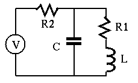
- To improve the power factor of the circuit above to 0.9, a shunt
capacitor is added. What should the capacitance
 be? What should be
if the power factor is required to be 1?
be? What should be
if the power factor is required to be 1?

- In the circuit shown below, the voltage source
volts,
and the effective values of the three currents
 , and
, and  are the same. The
total real energy comsumed by the circuit is 866 W. Find the values of
are the same. The
total real energy comsumed by the circuit is 866 W. Find the values of  ,
,  and .
(Hint: represent all currents
and .
(Hint: represent all currents  ,
,  ,
,  and voltage
and voltage  as phasors
as phasors
 ,
,  , 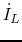,
, 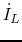,  , and draw them as vectors to figure out
how they are related.)
, and draw them as vectors to figure out
how they are related.)

- The circuit shown in the figure contains a voltage source
 ,
two resistors
,
two resistors  and
and  , and a silicon diode.
Find the voltage 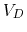 across and the current 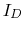 through the diode.
Solve this problem in two different methods: (a) assume voltage 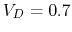
(as the diode is always forward biased), and (b) use the graphic approach
to find the intersection of the load line and the diode equation:
, and a silicon diode.
Find the voltage 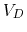 across and the current 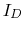 through the diode.
Solve this problem in two different methods: (a) assume voltage 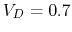
(as the diode is always forward biased), and (b) use the graphic approach
to find the intersection of the load line and the diode equation:
Sketch the plot of the two curves and estimate the solution  at their intersection. (Note that you can assume
at their intersection. (Note that you can assume  and
and
 at room temperature 300K.)
at room temperature 300K.)
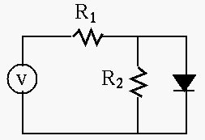
- The circuit shown in the figure contains a voltage source ,
three resistors , , and
 ,
and two silicon diode. Find the voltage across the two parallel branches.
(Hint: assume when the diode is forward biased.)
,
and two silicon diode. Find the voltage across the two parallel branches.
(Hint: assume when the diode is forward biased.)

- The circuit shown in the figure is a converter (adaptor) based on
a full-wave rectifier, which gets an AC voltage input of 115V 60 Hz, and
produces a 12V DC output. The voltage variation or ripple of the output
should not exceed 5% when the load current is no more than 2A. Design
the converter in terms of the turn ratio of the transformer and the
value of the capacitor.
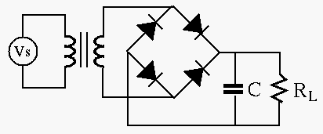
Next: About this document ...
Ruye Wang
2008-11-19